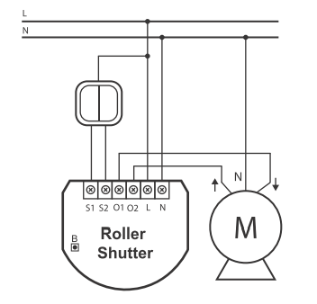

FIB_FGR-221
Firmware Version : 1.3 |
 |
Quick Start
To include the device into the network, turn the controller into the inclusion mode and then press the Up or Down button of the device three times during 1.5 seconds. The LED will become green for 3 seconds and then turn off. The device is now ready to work.
Please refer to the chapters below for detailed information about all aspects of the products usage.
What is Z-Wave?
This device is equipped with wireless communication complying to the Z-Wave standard. Z-Wave is the international standard for wireless communication in smart homes and buildings. It is using the frequency of 868.42 MHz to realize a very stable and secure communication. Each message is reconfirmed (two-way communication) and every mains powered node can act as a repeater for other nodes (meshed network) in case the receiver is not in direct wireless range of the transmitter.
Z-Wave differentiates between Controllers and Slaves. Slaves are either sensors (S) transmitting metered or measured data or actuators (A) capable to execute an action. Controllers are either static mains powered controllers (C) also referred to as gateways or mobile battery operated remote controls (R). This results in a number of possible communication patterns within a Z-Wave network that are partly or completely supported by a specific device.

- Controllers control actuators
- Actuators report change of status back to controller
- Sensors report change of status of measured values to controller
- Sensors directly control actuators
- Actuators control other actuators
- Remote controls send signals to static controllers to trigger scenes or other actions
- Remote controls control other actuators.
There are two different role a controller can have. There is always one single primary controller that is managing the network and including/excluding devices. The controller may have other functions - like control buttons - as well. All other controllers don't manage the network itself but can control other devices. They are called secondary controllers. The image also shows that its not possible to operate a sensor just from a remote control. Sensors only communicate with static controllers.
Product description
The Fibar Insert Motor Control allows controlling motors for jalousies and blinds both via Z-Wave wirelessly and locally utilizing a traditional wall switch. The device is placed in a wall box right behind the normal switch. The switch is not longer directly connected to the load but acts as input device for the Fibar insert that is controlling the load. The solution works with all switch design with or without neutral position as long as there is enough space in the wall box behind the switch. The device is just 15 mm height. The available space depends on the size of the traditional switch, the dimensions of the wall box and the amount of additional cabling placed in this box. This device is designed for a 3 wire system and needs a neutral wire in the wall box.
Before Device is installed
Please read carefully the enclosed user manual before installation of the radio-actuator, in order to ensure an error-free functioning.
ATTENTION: only authorized technicians under consideration of the country-specific installation guidelines/norms may do works with 230 Volt mains power. Prior to the assembly of the product, the voltage network has to be switched off and ensured against re-switching.
The product is permitted only for proper use as specified in the user manual. Any kind of guarantee claim has to be forfeited if changes, modifications or painting are undertaken. The product must be checked for damages immediately after unpacking. In the case of damages, the product must not be operated in any case. If a danger-free operation of the equipment cannot be assured, the voltage supply has to be interrupted immediately and the equipment has to be protected from unintended operation.
Installation Guidelines
The motor control insert is designed to fit into standard circular European wall boxes with 60 mm diameter. With its 15 mm height, it can be also mounted behind traditional wall switches. This wall switch serves as an external control switch to controll loads. The relays are realized in the insert.
The inserts contacts N and L are connected directly with the mains distribution of the power network. The three wires of the motor are connected like shown in the figure below.

The motor control can be operated locally using a switching paddle installed on the wall box. To connect the switching paddle with the insert it has to be connected with the insert contacts S1, S2 and Sx. Attention: There must not be mains-power connected to the insert contacts. This would immediately lead to a destruction of the insert..
The local operation can be realized by a double switching paddle (bistable) or a double button (monostable). The connected switch type must be selected according to the inclusion by setting the configuration parameter 14. The local switch is connected with the motor control insert as shown in the schematics. If a bistable switch is connected it has to stay connected until the motor control insert is included into the Z-Wave network.
Attention: The switch insert has an automatic endposition identification. This requires that the insert is connected with a tube motor with endposition switches. A test operation without motor leads to a wrong behavior.
Behavior within the Z-Wave network
I On factory default the device does not belong to any Z-Wave network. The device needs to join an existing wireless network to communicate with the devices of this network. This process is called Inclusion. Devices can also leave a network. This process is called Exclusion. Both processes are initiated by the primary controller of the Z-Wave network. This controller will be turned into exclusion respective inclusion mode. Please refer to your primary controllers manual on how to turn your controller into inclusion or exclusion mode. Only if the primary controller is in inclusion or exclusion mode, this device can join or leave the network. Leaving the network - i.e. being excluded - sets the device back to factory default.
If the device already belongs to a network, follow the exclusion process before including it in your network. Otherwise inclusion of this device will fail. If the controller being included was a primary controller, it has to be reset first.
Blinking red/green LED indicates that the device is in factory reset state. Once the controller is turned into inclusion mode tripple click one of the buttons on the device will include the device. A green blinking of LED will indicate successfull inclusion that will be turned off shortly afterwards. The device is excluded by tripple click to one of the buttons when the controller is in exclusion mode.
Operating the device
The shutter control insert allows you to control 230 V tubular motors. The actuator can directly be operated by the local switching paddle. If the switch is a conventional button, every button impulse will switch the device on or off. Using a switching paddle instead of a button the operation is the same with the exception that the switching paddle has to be switched back into the OFF status afterwards manually. One switching paddle of the double switch drives the motor in the one and the other paddle in the other end position.
The device is also able to report status changes to a controller (communication pattern 2) and to remotely operate other devices (communication pattern 5). The dimmer can be controlled by every Z-Wave device (communication pattern 1, 4 and 7). To operate other devices a second switch which does not operate the dimmer is needed.
LED Control
- Red and green blinking continuously: Device is not included in a Z-Wave network
- Red lights up for 3 seconds: Device was not included/excluded after being put into learn mode by triple press of up/down button
- Green lights up for 3 seconds: The inclusion/exclusion was successful or new association was saved successfully
- Green or no light: depending on settings of configuration parameter for LED control
Associations
A Z-Wave devices control other Z-Wave devices. The relationship between one device controlling another device is called association. In order to control a different device, the controlling device needs to maintain a list of devices that will receive controlling commands. These lists are called association groups and they are always related to certain events (e.g. button pressed, sensor triggers, ...). In case the event happens all devices stored in the respective association group will receive a common wireless command.
Association Groups:
| 1 | external Switch No 1 (max. nodes in group: 16) |
| 2 | external Switch No 2 (max. nodes in group: 16) |
| 3 | (max. nodes in group: 1) |
Configuration Parameters
Z-Wave products are supposed to work out of the box after inclusion, however certain configuration can adapt the function better to user needs or unlock further enhanced features.
IMPORTANT: Controllers may only allow to configure signed values. In order to set values in the range 128 … 255 the value sent in the application shall be the desired value minus 256. For example: to set a parameter to 200 it may be needed to set a value of 200 minus 256 = minus 56. In case of two byte value the same logic applies: Values greater than 32768 may needed to be given as negative values too.
| Value | Description |
|---|---|
| 0 | neither ALL ON nor ALL OFF are active |
| 1 | only ALL OFF is active |
| 2 | only ALL ON is active |
| 255 | ALL ON and ALL OFF are active (Default) |
| Value | Description |
|---|---|
| 0 | enabled (Default) |
| 1 | disabled |
| Value | Description |
|---|---|
| 0 | mono-stable switch (Default) |
| 1 | bi-stable switch |
| Value | Description |
|---|---|
| 1 — 153 | (Default 22) |
| Value | Description |
|---|---|
| 0 | Deactivated, devices does not react to alarms |
| 1 | Blind will go down in case of alarm |
| 2 | Blind will go up in case of alarm |
| Value | Description |
|---|---|
| 0 | Deactivated, devices does not react to alarms |
| 1 | Blind will go down in case of alarm |
| 2 | Blind will go up in case of alarm (Default) |
| Value | Description |
|---|---|
| 0 | Deactivated, devices does not react to alarms |
| 1 | Blind will go down in case of alarm |
| 2 | Blind will go up in case of alarm |
| Value | Description |
|---|---|
| 0 | Deactivated, devices does not react to alarms |
| 1 | Blind will go down in case of alarm (Default) |
| 2 | Blind will go up in case of alarm |
Command Classes
Supported Command Classes- Basic (version 1)
- Configuration (version 1)
- Multilevel Switch (version 3)
- Version (version 1)
- All Switch (version 1)
- Multi Channel Association (version 2)
- Basic Window Covering (version 1)
- Manufacturer Specific (version 1)
- Powerlevel (version 1)
- Association (version 2)
- Binary Switch (version 1)
Technical Data
| Power Supply | 230V ~50-60 Hz |
| Attachable Loads | 1 kW |
| IP Rating | 20 |
| Explorer Frame Support | Yes |
| SDK | 4.52 |
| Device Type | Slave with routing capabilities |
| Generic Device Class | Multilevel Switch |
| Specific Device Class | Multiposition Motor |
| Routing | Yes |
| FLiRS | No |
| Firmware Version | 1.3 |
Explanation of Z-Wave specific terms
- Controller — is a Z-Wave device with capabilities to manage the network. Controllers are typically Gateways, Remote Controls or battery operated wall controllers.
- Slave — is a Z-Wave device without capabilities to manage the network. Slaves can be sensors, actuators and even remote controls.
- Primary Controller — is the central organizer of the network. It must be a controller. There can be only one primary controller in a Z-Wave network.
- Inclusion — is the process of bringing new Z-Wave devices into a network.
- Exclusion — is the process of removing Z-Wave devices from the network.
- Association — is a control relationship between a controlling device and a controlled device.
- Wakeup Notification — is a special wireless message issued by a Z-Wave device to annonces that is is able to communicate.
- Node Information Frame — is a special wireless message issued by a Z_Wave device to announce its capabilities and functions.
Disposal Guidelines
The product does not contain hazardous chemicals.
Do not dispose of electrical appliances as unsorted municipal waste, use separate collection facilities. Contact your local government for information regarding the collection systems available. If electrical appliances are disposed of in landfills or dumps, hazardous substances can leak into the groundwater and get into the food chain, damaging your health and well-being.